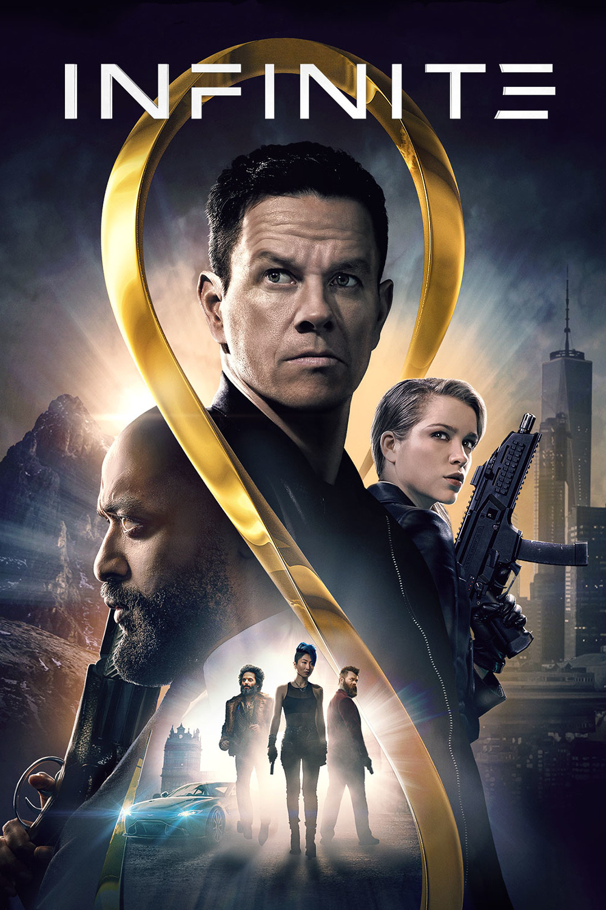

Мировая премьера: 10 июня 2021
Сюжет: Эвану МакКоли не дают покоя навыки, которым он никогда не учился, и воспоминания о местах, в которых он никогда не бывал. Он пьёт таблетки и находится на грани нервного срыва, когда ему на помощь приходит секретная группа, называющая себя "инфинитами", члены которой рассказывают ему, что его воспоминания реальны, но связаны с его прошлыми жизнями. Инфиниты переносят Эвана в свой необыкновенный мир, в котором немногие избранные обладают способностью рождаться заново, сохранив воспоминания и знания, накопленные за сотни лет. В прошлом Эвана скрыты важные секреты, и он начинает сотрудничать с инфинитами, чтобы найти ответы в своих воспоминаниях, но времени мало, так как человечеству угрожает один из членов организации, стремящийся уничтожить всё живое, чтобы положить конец проклятию бесконечного цикла перерождений.
Режиссёр: Антуан Фукуа
В основе: Роман Эрика Д. Майкранца "Записки реинкарнациониста" (США, 2021)
В ролях:
| Марк Уолберг | Эван МакКоли |
| Чьюител Эджиофор | Отто Бэтхёрст |
| Софи Куксон | Нора Брайтман |
| Джейсон Манцукас | Мастер |
| Йоуханнес Хёйкьюр Йоуханнессон | Ковик |
| Дилан О'Брайен | Генрих Тредуэй |
| Тоби Джонс | Брайан Портер |
| Лиз Карр | Гэррик |
| Каэ Александр | Трейс |
| Марк Фляйшманн | Владелец ресторана |
| Джек Рот | Ронни |
| Руперт Френд | Бэтхёрст в 1985 |
Бюджет: $ 50 млн.
Продолжительность: 1 ч. 38 мин.
Рейтинг: 5.5